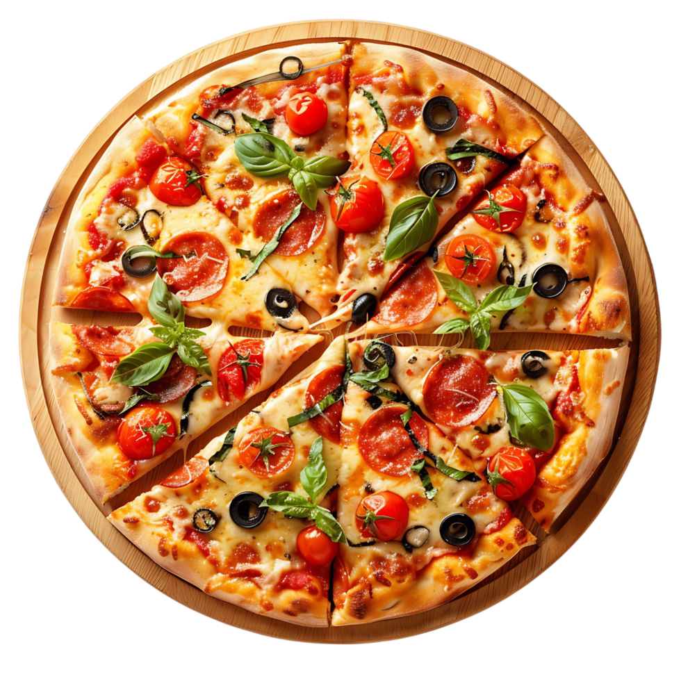

Pizzería Nueva Orleans es una marca que nace de la tradición y se fortalece con el paso del tiempo, construyendo una identidad basada en la calidad, el sabor auténtico y la cercanía con sus clientes.
Más que un lugar para disfrutar comida, se ha consolidado como un punto de encuentro donde las experiencias se comparten y los momentos se convierten en recuerdos.
Su propuesta combina lo mejor de la tradición con una visión contemporánea, buscando conectar con nuevas generaciones sin olvidar a quienes han sido parte de su historia.